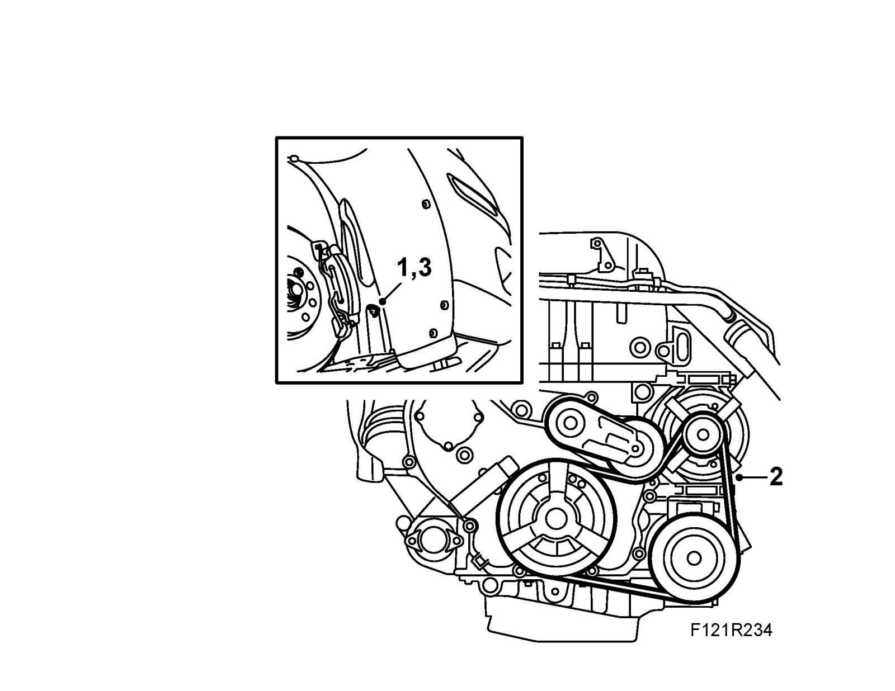

Drive Belt Tensioner: Testing and Inspection
Checking condition of drive belt and belt tensionerChecks
1. Raise the car and undo the front part of the right wing liner. Bend out the wing liner.
2. Inspect the belt for damage or cracks. Make sure the markings on the belt tensioner are in their correct positions. Change if necessary, see Drive belt, auxiliary equipment (multigroove).

3. Fit the screws and nut for the right wing liner.
4. Lower the car.